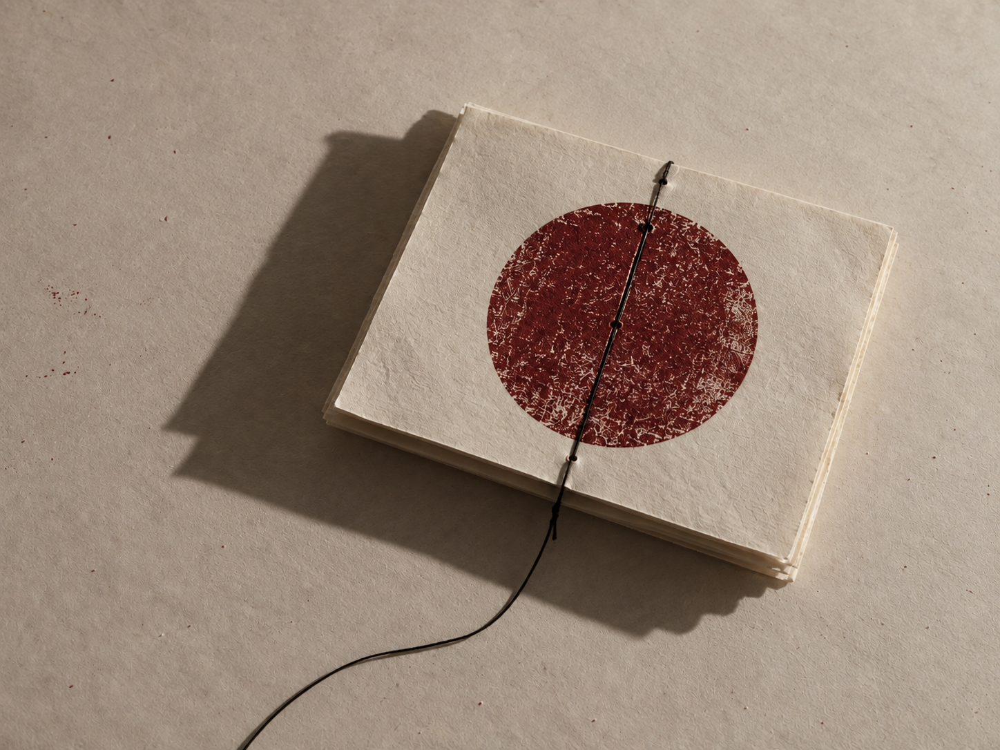
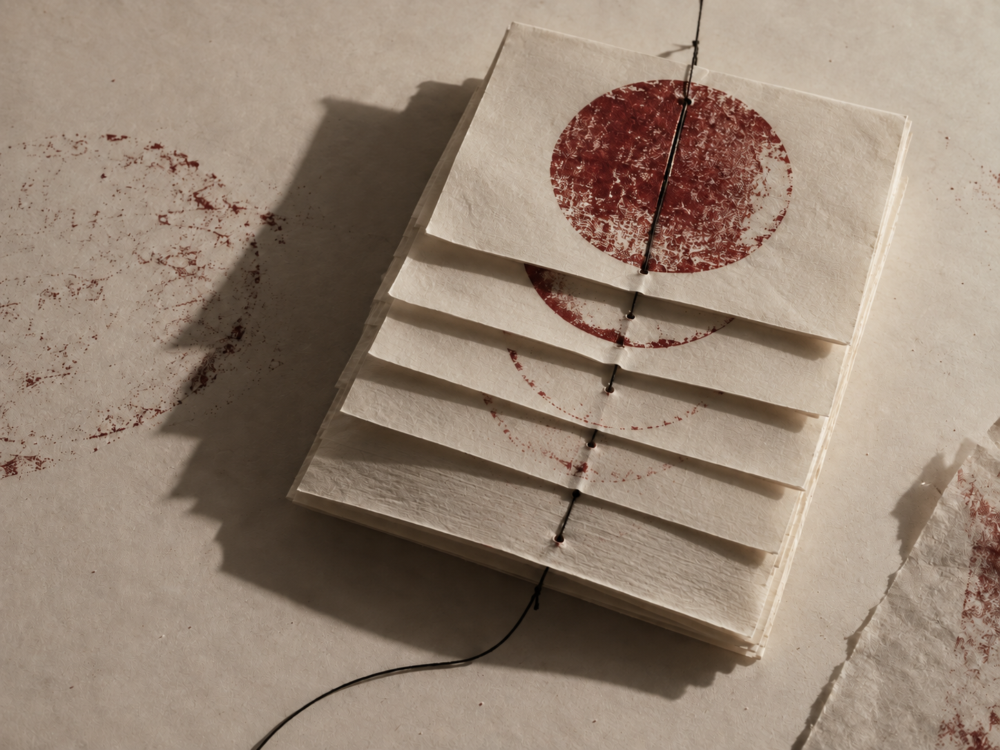
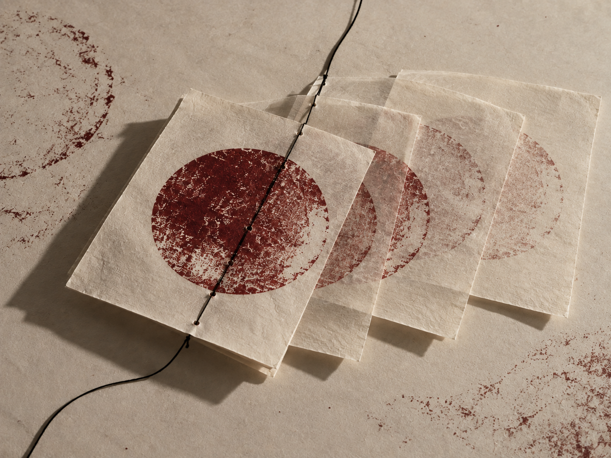
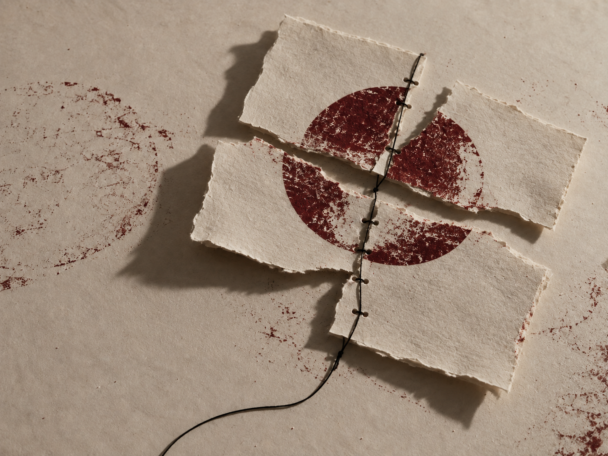
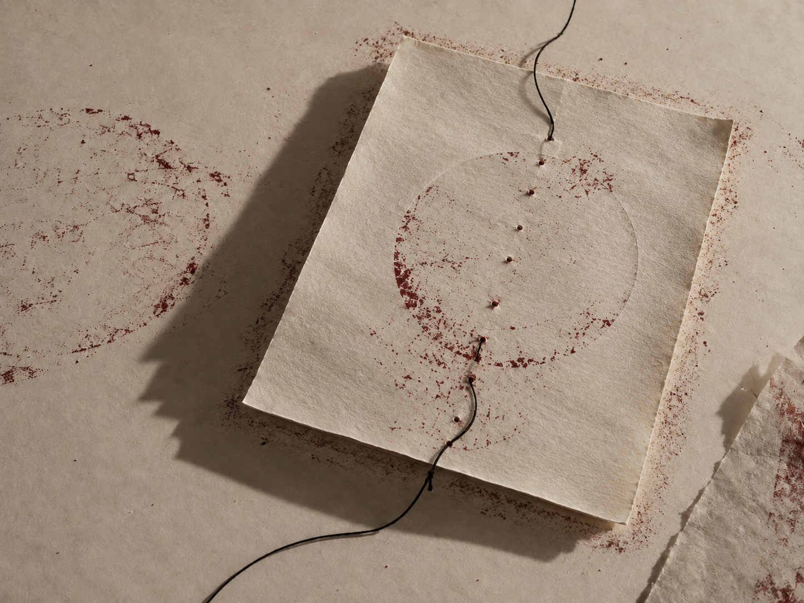

Ensayo visual / 001
Interferencia
00
El ruido no interrumpe la imagen. La termina.

Mueve el cursor sobre la imagen para alterar la señalDesliza para alterar la señal00 / Hipótesis
Una señal nunca llega intacta.
Se dobla, se repite, pierde información. En esa pérdida aparece otra cosa: carácter.
Interferencia estudia el error como materia: vidrio que desplaza, papel que recuerda y pigmento que dibuja una ausencia.
01 / Señal
Todo empieza limpio.
Una línea. Una regla. Una intención. Después, inevitablemente, el mundo entra en medio.

02 / Desfase
REPETIR
REPETIR
Repetir no es copiar. Cada eco mueve el original unos milímetros hasta convertirlo en otra cosa.



05 / Residuo
Cuando la señal se va, la imagen permanece.
Lo que desaparece también modifica la mirada